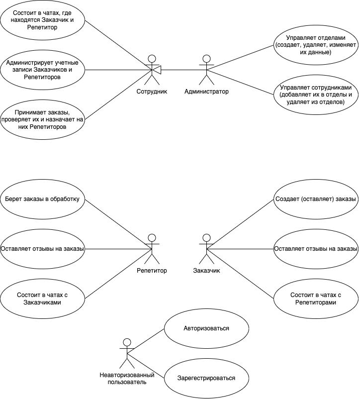
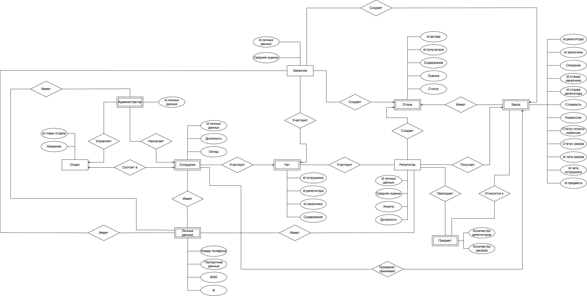
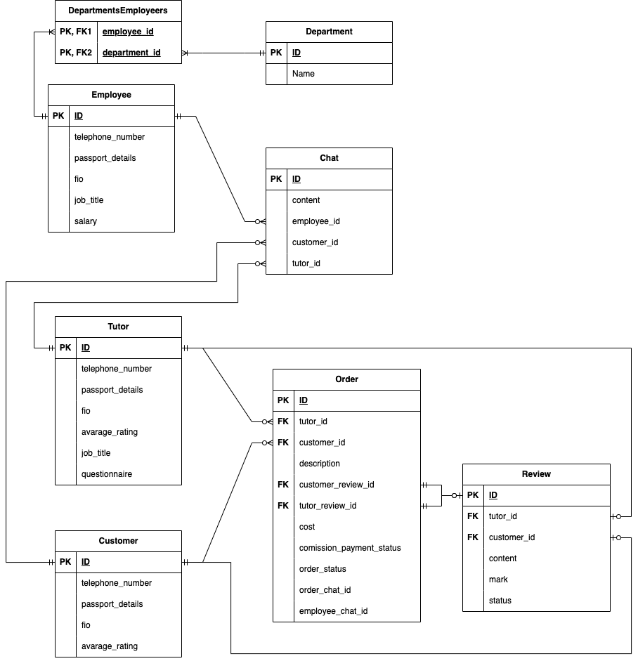
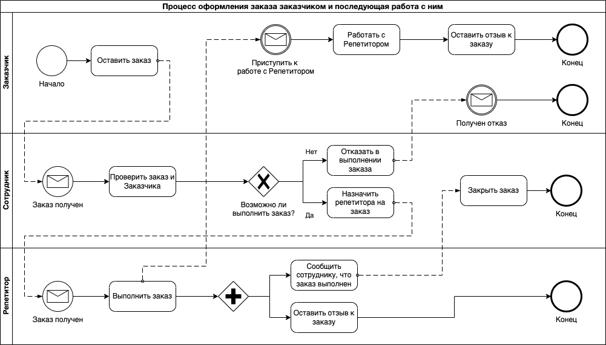
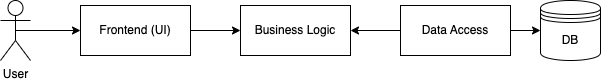
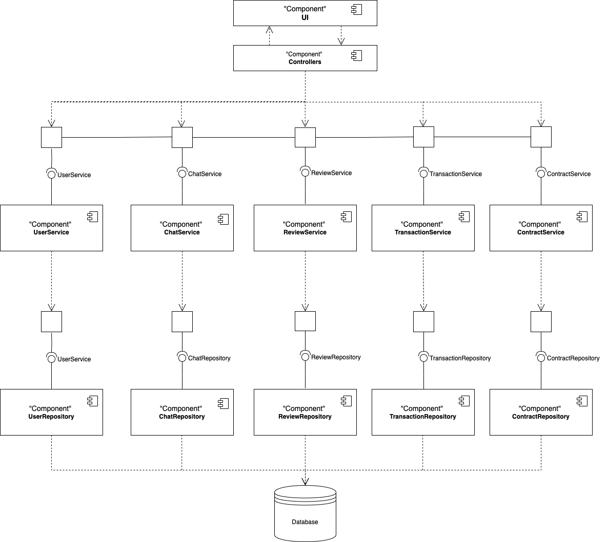
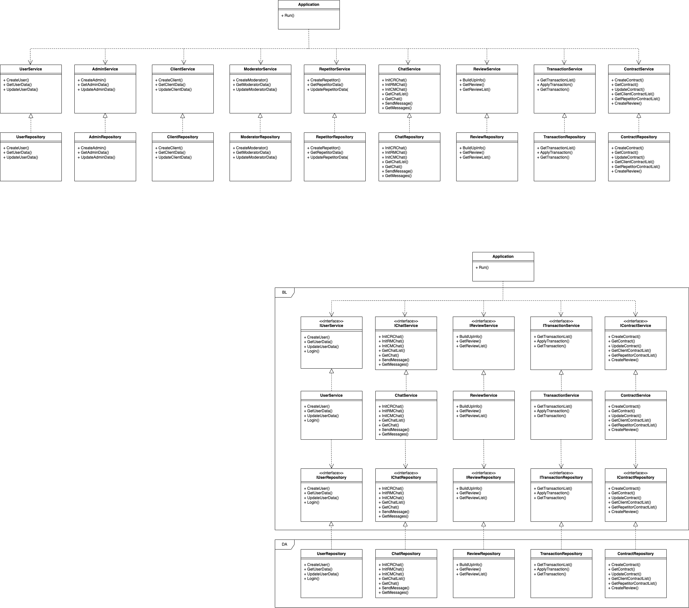

Название: Сайт репетиторства
Краткое описание идеи проекта
Проект представляет собой веб-приложение для поиска и заказа репетиторских услуг. Клиенты могут размещать заказы на занятия, а сотрудники проверяют их и назначают подходящего репетитора. В приложении реализована система чатов для взаимодействия между заказчиками и репетиторами, а также возможность оставлять отзывы.
Краткое описание предметной области
Приложение предназначено для взаимодействия между заказчиками, репетиторами и сотрудниками. Основные функции включают размещение заказов, подбор репетиторов, ведение чатов, управление учетными записями и отделами, а также систему отзывов. Система позволяет автоматизировать процесс поиска репетиторов и взаимодействия между пользователями, обеспечивая удобство.
Краткий анализ аналогичных решений
| Название |
Поиск репетиторов |
Чаты |
Отзывы |
Фильтрация по предметам |
Онлайн/Офлайн |
| Skyeng |
+ |
+ |
+ |
+ |
Только онлайн |
| TutorOnline |
+ |
- |
+ |
+ |
Только онлайн |
| Preply |
+ |
+ |
- |
+ |
Онлайн/Офлайн |
| Мой проект* |
+ |
+ |
+ |
+ |
Онлайн/Офлайн |
Актуальность и уникальность проекта
Современные технологии делают поиск репетиторов проще и доступнее. Однако многие существующие платформы либо не обладают нужным функционалом, либо неудобны в использовании.
Данный проект выделяется благодаря следующим особенностям:
- Поиск репетиторов: наличие у пользователей возможности выбирать репетиторов по своему желанию.
- Модерируемые чаты: сотрудники платформы следят за общением между пользователями, предотвращая мошенничество и обеспечивая безопасность для всех участников.
- Отзывы: наличие возможности оставлять отзывы как на пользователей, так и на репетиторов, что обеспечивает прозрачность при выборе репетиторов и при принятии заказов от пользователей.
- Режим обучения: возможность заниматься как офлайн, так и онлайн.
Краткое описание акторов (ролей)
- Сотрудник: состоит в чатах с заказчиками и репетиторами, администрирует учетные записи пользователей, принимает заказы, проверяет их и назначает репетиторов.
- Администратор: управляет отделами (создает, удаляет, изменяет их данные), управляет сотрудниками (добавляет их в отделы и удаляет из отделов).
- Репетитор: берет заказы в обработку, оставляет отзывы на заказы, состоит в чатах с заказчиками.
- Заказчик: создает заказы, оставляет отзывы на заказы, состоит в чатах с репетиторами.
Use-Case диаграмма

ER-диаграмма сущностей
Основные сущности:
- Сотрудник
- Заказчик
- Репетитор
- Администратор
- Личные данные
- Отдел
- Чат
- Отзыв
- Заказ

Диаграмма базы данных

Пользовательские сценарии
1. Создание заказа заказчиком
- Заказчик заходит в систему (авторизуется или регистрируется).
- Выбирает предмет, по которому требуется репетитор.
- Переходит на страницу создания заказа.
- Заполняет информацию о заказе:
- Предмет (математика, физика, английский и т. д.)
- Уровень подготовки (школьник, студент, подготовка к экзамену, доп. курсы, иностранные языки, поступление в ВУЗ, олимпиады)
- Желаемая стоимость (диапазон или фиксированная цена)
- Формат занятий (онлайн/офлайн)
- Дополнительные пожелания (например, "нужен носитель языка")
- Подтверждает заказ.
2. Обработка заказа сотрудником
- Сотрудник получает уведомление о новом заказе.
- Проверяет корректность данных.
- Ищет подходящего репетитора.
- Назначает репетитора.
- Заказчик получает уведомление о назначении репетитора.
3. Взаимодействие через чат
- После назначения репетитора создается чат между заказчиком и репетитором.
- Заказчик и репетитор могут обмениваться сообщениями.
- Сотрудник может модерировать чат при необходимости.
4. Проведение занятия и завершение заказа
- Репетитор проводит занятие.
- Заказчик подтверждает, что услуга оказана.
- Система автоматически завершает заказ.
- Заказчик может оставить отзыв о репетиторе.
Формализация ключевых бизнес-процессов (BPMN)

Технологический стек
Тип приложения: Web-SPA (Single Page Application)
Проект представляет собой веб-приложение для поиска репетиторских услуг. Веб-приложение будет реализовано как одностраничное приложение, чтобы обеспечить плавное взаимодействие с пользователем без необходимости перезагрузки страницы.
Технологический стек:
- Frontend: TypeScript, React
TypeScript обусловлен строгой типизацией, что улучшает качество кода. React будет использован для создания динамичного интерфейса.
- Backend: Go (Golang)
Go выбран за производительность, простоту и поддержку многозадачности, это важно при обработке большого количества запросов.
- СУБД: PostgreSQL + DBeaver
PostgreSQL - надежная и масштабируемая реляционная БД, DBeaver - инструмент для удобного администрирования базы данных.
- Взаимодействие: REST API
Взаимодействие между фронтендом и бэкендом будет осуществляться через REST API.
- Контейнеризация: Docker, Docker-compose
Верхнеуровневое разбиение на компоненты
Приложение состоит из трех основных компонентов:
Компонент реализации UI (Frontend):
- Отвечает за отображение интерфейса пользователя.
- Включает страницы для заказчиков, репетиторов, сотрудников и администраторов.
- Взаимодействует с бэкендом через REST API.
Компонент реализации бизнес-логики (Backend):
- Обрабатывает запросы от фронтенда.
- Содержит логику работы с заказами, чатами, отзывами, пользователями и транзакциями.
- Взаимодействует с компонентом доступа к данным для получения и сохранения информации.
Компонент доступа к данным (Data Access):
- Взаимодействует с базой данных.
- Включает репозитории для работы с сущностями (пользователи, заказы, чаты, отзывы и т.д.).
- Использует паттерн Repository для абстракции доступа к данным.

Диаграмма компонентов:

Принцип инверсии зависимостей:
- Компонент бизнес-логики зависит от абстракций (интерфейсов) репозиториев, а не от их конкретных реализаций.
- Это позволяет легко менять реализацию репозиториев (например, перейти с PostgreSQL на другую СУБД) без изменения бизнес-логики.
Диаграмма классов:
